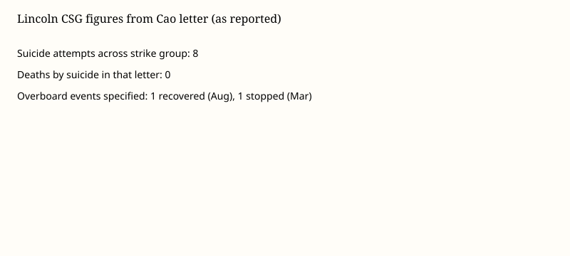

U.S. Navy · personnel · 23–24 September 2026
Acting Navy Secretary wrote that eight suicide attempts occurred across the Abraham Lincoln strike group and that none were fatal.
_underway.jpg)
What is agreed across desks
Acting Navy Secretary Hung Cao sent Senator Kirsten Gillibrand a letter, reported on 23–24 September 2026, stating that since the start of the USS Abraham Lincoln deployment there have been eight suicide attempts across the carrier strike group. The count includes the ship’s crew and sailors from the carrier air wing, strike-group and destroyer-squadron staff, escorting destroyers and embarked aviation squadrons. Cao wrote that no service member died by suicide during that deployment window covered by the letter. BBC, Stars and Stripes, CBS and the Guardian match on those two numbers: eight attempts, zero deaths in the letter.
The letter, as quoted, specifies two overboard-related incidents among the eight: one sailor assigned to the air wing went overboard in early August and was recovered by a search-and-rescue helicopter, then transferred off the ship for follow-on care; one sailor attempted to go overboard in March and was stopped by shipmates. Deployment length is described in different round numbers because desks mix days at sea, days since the November 2025 departure, and days until San Diego return. The deployment supported U.S. operations related to the war with Iran.
Cao listed embarked support including chaplains and behavioral-health staff. He acknowledged temporary localized piping failures, problems with reverse-osmosis desalination units, and a short period of reduced meal options. He denied a characterization of a generalized mental-health crisis.
What is only a quote
Family descriptions of grim conditions are testimony, not a ship survey. Senator Gillibrand’s statement that conditions were serious and deteriorating is a political evaluation of the same letter. Anonymous official characterizations of the count as incredibly high are opinions about magnitude. Leadership comments that time at sea was not nearly long enough do not change the eight/zero pair in Cao’s letter. Comparisons to Navy-wide rates depend on the denominator used; that table was not attached to the letter.
Mechanism a reader needs
A carrier strike group is several thousand people. An attempt count in a congressional letter is an administrative total. It does not publish names, diagnoses or command investigations. Long deployments without regular port calls raise known occupational-stress loads. Those mechanisms are documented in naval medicine literature. They do not, by themselves, tell a reader whether eight is high relative to a matched control group of other 2025–2026 deployments. The difference between an attempt count and a death count matters. The letter’s zero-death statement is a specific official claim. It should not be padded into there was no problem or inverted into a claim the letter does not make.
Readers who need help can use the 988 Suicide and Crisis Lifeline in the United States or Military OneSource. This article does not describe methods and does not treat any sailor as a public case file.
What the story is not
This is not a completed Inspector General report. It is not a finding that Iran operations caused each of the eight events. Causation in occupational mental health is multi-factor. It is not a brief for or against the war. The personnel number can be reported without converting it into a referendum on strategy.

Source articles and scores
| Outlet | Headline | T | N | C |
|---|---|---|---|---|
| BBC | Eight US sailors in USS Abraham Lincoln strike group attempted suicide, Navy says | 94 | 0 | 98 |
| Stars and Stripes | 8 service members in Lincoln strike group attempted suicide on recent deployment | 95 | 0 | 100 |
| The Guardian | Eight USS Lincoln personnel have attempted suicide, US navy confirms | 92 | −12 | 90 |
| CBS News | Navy reports 8 suicide attempts on carrier group | 93 | 0 | 96 |
Image credits: Commons / U.S. Navy type still; chart original. Help: 988 in the United States.